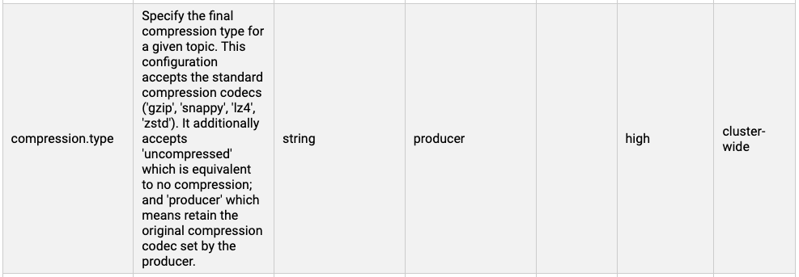
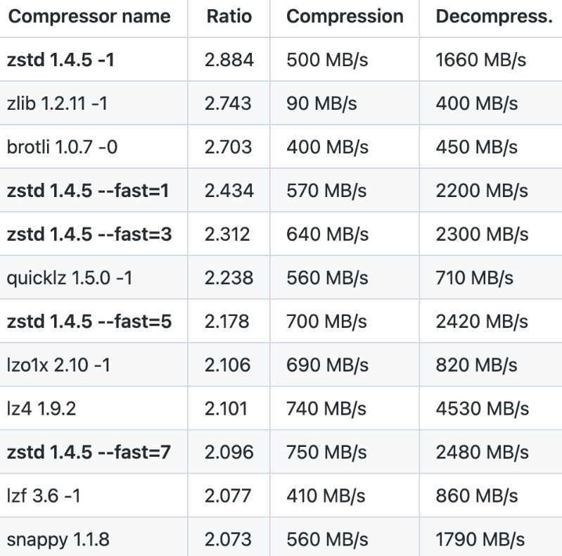

Enabling Compression in Kafka
After Kafka turns on compression, it can greatly optimize disk usage and network transmission overhead, as well as CPU usage and gc time. The parameter to turn on compression is compression.type
Specify the final compression type for a given topic. This configuration accepts the standard compression codecs ('gzip', 'snappy', 'lz4', 'zstd'). It additionally accepts 'uncompressed' which is equivalent to no compression; and 'producer' which means retain the original compression codec set by the producer.

This parameter can be set in both broker and producer. It is recommended:
- Set in producer, then broker is set to producer;
- If it is not set on the producer, it will be set on the broker.
ps: If set in both places, the two compression algorithms may be inconsistent. In this case, the broker needs to decompress the message first, then compress it and then place it on the disk, which increases CPU overhead.
After turning on compression, you can confirm it with the following command:
bin/kafka-run-class.sh kafka.tools.DumpLogSegments --files /data/kafka/test-0/00000000000000000000.log --print-data-log | grep compresscodec
A comparison of various compression algorithms is as follows:

Reference:
https://blog.cloudflare.com/squeezing-the-firehose
https://stackoverflow.com/questions/67537111/how-do-i-decide-between-lz4-and-snappy-compression